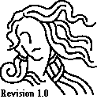
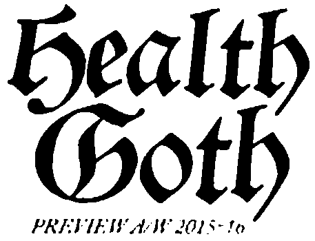

Woe, make me your student
Devine Lu Linvega's journal
2025
19V
2025-10-27 Commutative Arithmetic Anarchy
We ought to purge the division operator from the curriculum. Let's be honest, it shipped broken, it enforce sequential evaluation where order ought not to matter. Free your notation system from the tyranny of rule, and multiply fractions in whichever order you like.
40 / 10 * 2, a kludge.
40 2/10, timeless, classic, parallel.
40 5^-1, if fractions are not your thing.
Now, don't even get me started on subtraction, get rid of that bloat, add negative numbers if you need to, but do not ever subtract.
19U
2025-10-18 Radio Taiso
I started off by getting the attendees to mimic my movements, standing on one of the stage monitors. I raised a hand, a few hands shyly went up, I bent sideways as if to stretch, more joined in. I raised the other and a venueworth of hands poked through the fog machine haze, laughing. I twisted left, right and clapped my hands twice, the answer went clap! clap! I jumped in place twice, the answer went boom! boom! My friend said it looked like an alien tried to establish contact before the whole place blew up.
It has been a few years since I last enjoyed the early autumn weather of the east coast. We waste the shortening daylight hours kicking at the dried leaves along the park trails talking about horror movies, ideas for pumpkins and the clever things that kids we've met along the way have said.
19T
2025-09-30 Dear Majmasz
A searing hot shower, fresh unwilted vegetables, new old shoes and a spray of fragrant golden leaves all conspire, during the fretful hours of the night when a few sleepless neurons can't seem to riddle out why the wind is not pivoting us around the anchor, to reassure me that we have indeed returned and are once again docked in Victoria.
I will try and draw a few dailies before we get caught in the whirlwind of visiting families and friends, I fear that I won't have much time to spare in the next two weeks.
- Started proof-reading the Victoria-Sitka logbook(untitled).
- Found an important optimization to the Uxn core!
- Finalizing rehearsals for AMP Festival on the 11th.
- Enjoyed reading that Books & Portraits for a third time.
19S
2025-09-17 Aliceffekt Unslumber
It had been a very long time since I last gathered enough songs to release an album, I wish I could say that life got in the way, or something excusable like that, but in truth, when I released that last album, I felt like I had just about written all that I meant to write, so I let Aliceffekt fall asleep and focused onto other things.
Every once in a while, I did have ideas for new songs, but nothing that made it past the drawing board I could tie with the rest of the Neauismetica. Lately, I started to imagine new places to populate Dinaisth with, and the songs and pictures started to come back, so I decided to gather some of those, wake Aliceffekt up again, and put it out!
- Release a new Aliceffekt album, Ver'Iytsl.
- Redesigned Noodle in preparation for Drawtober.
- Improved oscean.tal to be safer from overflows.
- Enjoyed watching Common Side Effects.

19R
2025-09-02 Year Of The Basic Desktop!
Once again, I find myself wasting valuable scientific computing equipment on clerical work. This time around, I've persuaded my computer to evaluate BASIC programs. I began implementing the graphical interpreter back in 2023 without ever finishing it, leaving it in a utterly unusable state.
But, I resumed working on it the other day, overcome by a kind of creative fever, I finished it, released it as Sunflower BASIC and I haven't been able to put it down since. It's just too fun. Maybe this will appeal to someone's else nihilistic programming sensibilities!
What are we going to do? Return to the order of the day, presumably..

19Q
2025-08-19 Fiu Sos
Warm gusts passing through blackberry bushes on the shoreline carry with them that distractingly sweet summer smell inside the companionway, making it difficult not to want to be out there, either cycling or skating.
Whenever we're not busy playing outside, doing errands or stuffing our faces with wild plums, I spend some of my time translating the lesser known Solresol documents, more specifically Joséphine Sudre's Théorie & Pratique, and incorporating the different families and categories to the En-Sr Translator.
- Released Permacomputing 101 talk.
- Optimized Uxn11's screen drawing.
- Incorporated families and categories to Solrela.
- Enjoyed diving back into Middlemarch.

19P
2025-08-10 Liud a Solresol
Midau Wiktopher a Solresol do tam, de tiu miusi, tout'lotau tiu momau.
Gajewski lel'lat dauda, fedi sir, fiu mausa, lel ted foul.
Saufau か a Japanese fot lel, "sol" a Solresol tout'lotau fa siufou!
Mita, sili'sito mi ril, Thue sili'ses fa lefiu. A sito, mou tiufau fiu mal, mouso lar'tiufau re REPL tiu sefiu.

19O
2025-07-28 Workout Routine
I've received a few messages asking about workout plans, and
like I've said before, I am the last person you want to take advice from. I'm
merely writing these down for the sake of being able to look back on what I
tried. My aim in all this is to build just enough upperbody strength so that I
can do a muscle-up when spring rolls in. Unless you're
already somewhat deep into your calisthenics journey, I wouldn't try
replicating any of this.
We're already a few weeks deep into summer, so I want to look back at how
working out aboard actually worked out. Our life aboard has been much
too chaotic to allow for any kind of pattern, so I can't say that I've
developed anything like a routine, but these are the predictably recurring
exercises that I've enjoyed doing every single day:
- Rowing: 10min.
- Dips: 2x10.
- Dead-Hang: 2x60sec.
- Pull Ups: 4x10.
- Hand Grippers: 10x50lb, 10x100lb, 5x150lb.

19N
2025-07-18 Polycat
Spent a few days making Polycat with Rek for Catjam
2025. It was a nice distraction from the Uxn book and an
opportunity for us to make a little platformer together. We worked on the game during our sail up the west coast of Vancouver Island on our way to Ucluelet. We had a few days of downtime along the way,
when we were anchored and surrounded by hummingbirds, making sure that our strange little cat could make it over the obstacles.

19M
2025-07-01 Tent
A couple of months ago, on the train to Strange Loop, I had the good
fortune of sharing a cabin with Anders, whom I had just met and who
shared with me a way of guessing at the correct settings for shooting with a
broken light meter using a technique called Sunny-16. Unfortunately, by
the time I had made it back home, I couldn't recall how it all worked.
I just spent the past few days anchored by Blakely Island, wandering into the
woods holding old film cameras with a few friends,
which I am now gladly counting Anders among them who spent
time with me to go through the motion once again using my own Voightlander and
its broken light meter.
Sunny-16 goes something like this: At f-16, with the shutter speed at
about roughly the film speed, should turn up a good picture on a sunny clear
day. From there, one can work their way down the f-stops, so that at the speed
of the film, f-8 would be a cloudy day, f-4 an indoors picture, and so on.
- Haven't been up to much at all these past two weeks.
- But, I've read the Silmarillion, and dear lord-

19L
2025-06-09 Working Out
Before casting off from Victoria, we wondered if it'd be enjoyable, or even
safe to work out aboard Pino. It did take a bit of getting used to at first,
but we've eventually both fallen into a daily habit of doing pull ups from the
companionway, dips with the cockpit seats, seated rows by trapping a resistance
band around a winch and lat pulldowns from the boom.
One of my projects for the next few years is to raise my grip strength enough
that I can reliably close down a 70kg hand gripper, so every evening, I pull
out a book or a video(solar permitting) and do hand exercises for an hour or
so.

19K
2025-05-31 Haul Out In Texada
While we are hauling out Pino, my laptop is safely
storaged in the chart-table. In this idle time away from the keyboard, I
daydreaming about strange finite-state machines.
- Expanded documentation on Uxntal Validation.
- Created an interactive Modal Playground.
- Implemented Modal in Uxntal and improved examples.
- Enjoyed re-reading Loeliger's Threaded Interpretive Languages.

19J
2025-05-24 Cast Off
It's happening! I've begun drafting a rough layout for a tentative book
project, for which the working title is currently Turnip Complete. I
don't know if I can actually go through with this idea yet, but I'm going find
out over the summer, and hopefully have something to show in the fall. The idea
would be to have a paper artifact that contains everything that currently makes
up the Uxn/Varvara ecosystem, from implementation details, to language
specification; all from basic principles.
We're just about ready to cast off from Victoria for the summer, and today was
my last day at the gym. I pushed hard these past few months, and it's beginning
to pay off. The back pains I had are gone, I sleep much better, I feel stronger
and clothes even fit me better. I gained 10kg, and I'm hoping to reach my ideal
weight of 80kg in the next few months. I have plans to work out from aboard Pino, but in practice, I'm not sure how possible, or safe,
it'll be..

19I
2025-05-05 For The Future
Over the years, by haphazardly filling-in missing details to the docs as
questions arose, I've let the Uxntal language pages
grow into a tangled and overgrown labyrinthine mess that oftener threw folks
into opaque dead-ends than answer questions.
This week, a pointedly cutting criticism of the Uxn documentation shook me out of
the laissez-faire that I had over these few pages and reminded me how letting
it go the way I did was a disservice to others, but especially myself,
considering that I may be using this tool, possibly for the rest of my
life.
Since I couldn't clearly discern what should and shouldn't be there, I've
asked for help, and got excellent ideas. With feedback from both new learners
and experienced folks, I rewrote most of the documentation, included new
examples, expanded tests and added setup instructions for both Uxn, and
Varvara.
Looking at the documentation now, I feel like I would very much like to work
on writing a book about it, to have a paperback artifact in the style of
Henderson's LispKit Manuals. A treatise on the design and
implementation of the system from the bottom up, but plastered with
drawings.
- Wrote 10 examples for the revamped Uxn REPL.
- Made a graphical version of Drifblim.
- Changed behavior of lowercase jumper operators in Orca.
- Enjoyed Ryan Coogler's Sinners.

19H
2025-04-13 Paper Paper Paper
I was recently reminded of that paper about how flat origami is Turing-complete, and of how I never
did attempt to fold one of these for myself. I've already written about a paper computer and all the ways in which
computer emulators can be operated on paper, but nothing on using the paper
itself for doing the computation. So I set out to correct that, and all the
while learning how to do hexagonal folds for the first time.
Another thing on my plate has been to gradually getting rid of Uxnasm.c in favor of the self-hosted one. Before I entirely drop that
dependency, I want to be absolutely certain that the bootstrapping process is
as robust as I could possibly make it. I'm not 100% happy yet, but uxnasm.c is
getting closer to retirement.

19G
2025-03-30 Spring Skates
Spring is finally poking its nose in Victoria and messing around on the
computer is the last thing on my mind at the moment. But I did find some time
to make a bit of non-sense with Flick, and improve the
Solresol documentation.
- Mesi Ses Sel do sefiu.
- Added opengraph tags to the wiki.
- Put on my new skates.
- And, rushed outside listening to Hideki Naganuma!

19F
2025-03-16 Flick Game
I recently came across Increpare's lovely Flickgame project. It's a kind of slideshow program and
game engine in which scenes are navigated based on which color is clicked on. I
didn't see myself using the javascript implementation, and since this elegant
idea was so straightforward, I figured I might as well spend a day to port it
to Varvara.
I took the opportunity to improve things a bit and made it usable on the
NintendoDS. Once I had a working version, I wrote a compiler for flick games to
uxn roms, so I could share the results. And then, I started drawing little
stories, and then some. How about a #flickjam?
- Implemented a port of Flickgame.
- Redesigned Turye.
- Enjoyed two months sober.

19E
2025-03-05 Process
For a while now, I've been feeling like I've sort of maxed out on programming, not to say that I know everything
there is to know about the topic, but that I've learned enough to shape software
in exactly the way I need to tackle the problems I typically need programming
for. So I've been turning my gaze into other domains of life which I've all but
neglected while on this creative coding journey.
I've ramped things up a notch these past few weeks and dedicated more time to
learning about fitness, nutrition, anatomy and getting a bit smarter about
the way I work out. This new fascination of mine is teetering close to a full
on project, when even on rest days, a sizeable chunk of my waking hours goes
into reading about related topics and planning the next day's exercises and
meals. I might just keep on pulling on that thread to see where this leads. A
nagging voice in my head keeps going on and on about how this might just come
in handy in the very near future.

19D
2025-02-18 Faeputing
I've had various little undocumented utilities
hanging around that didn't share a clear connection in terms of design. I
recently needed a desktop calendar to track some personal stats and decided to
riff on Note Pad for its UI, which is itself already
a port of the classic Macintosh program. To tie it all
together, I gave the same treatment to the music player, which was inspired
from the first generation iPod. They all look really nice next to each other
now.
- Ah yeah, I also wrote a spreadsheet editor.
- Object-oriented stack machine assembly is such a joy!

19C
2025-02-01 Monochrome Oquonie and Neural Nets
Trying to bridge the gap between rewriting
systems and interaction nets, I gave a
second look at McCulloch & Pitts neural nets. I
was curious to see if this would make for a fun and readily parallelizable
language runtime, so I went ahead and spent the better part of the past few
days designing one.
I haven't used it for anything serious yet, but already with as little as 150 lines of code it allows me to
quickly prototype and evaluate tasks! My plan is to use it as a sort of
coordination language.

19B
2025-01-25 Handmade Conference Post-Mortem
Some months ago, attendees of the Handmade Seattle conference expressed their
grievances with the conference in regards to its pivoting to include talks with
mentions of social justice awareness and a slightly more diverse panel of
speakers, at the cost of the usual guy-packs-bytes-in-the-right-sequence
talks. Which I have nothing against as someone who tend to give talks of
that exact flavor.
In any case, the conference organizer apologized for the poor selection of
speakers which did not correspond to the expectations of ticket holders,
promising to resolve the issue in the following year, and in passing, that free
and open source software developers would no longer be welcomed as
speakers.
I happened to be present in the chatroom when the apology letter went out and
merely questioned whether the choice was really about the lack of
low-level talks, and not something else. It did not take long for
bigots of all sorts to come out and lament the good old days of the conference
and soon the chatroom was ablaze with some pretty vile things against trans
people, this went on for hours without intervention, the usual.
What I did not expect was for the conference organizer, who ghosted me for
months, to finally break radio silence to slam me for speaking out and
partially blaming me for the unraveling of the conference organization, and
decided against covering the agreed upon travel stipend. I have since
requested for the talk videos to be removed.
So why is software so terrible?
We made it terrible.
The Handmade Manifesto
19A
2025-01-11 Langdev January
It has become something of a yearly ritual to take the first few days of the
year to write a new implementation of the compiler
I use daily. It serves to see how my programming style and solutions to these
now familiar problems might have evolved, it also ensures that the language
itself doesn't grow beyond what I am capable of implementing in at most a
week's time.
The most discernible difference in this new implementation, is that it leans
heavily on object-oriented patterns, by
favoring methods acting on private values, over pointer arithmetic by function
application. The stack is principally used as the communication channel between
objects, for example, a text object's buffer is only ever modified through its
explicitly defined capabilities, not by a function taking a text pointer. It
turns out it limits bugs, it is faster and even often smaller!


incoming: home events blog
{kind=link}